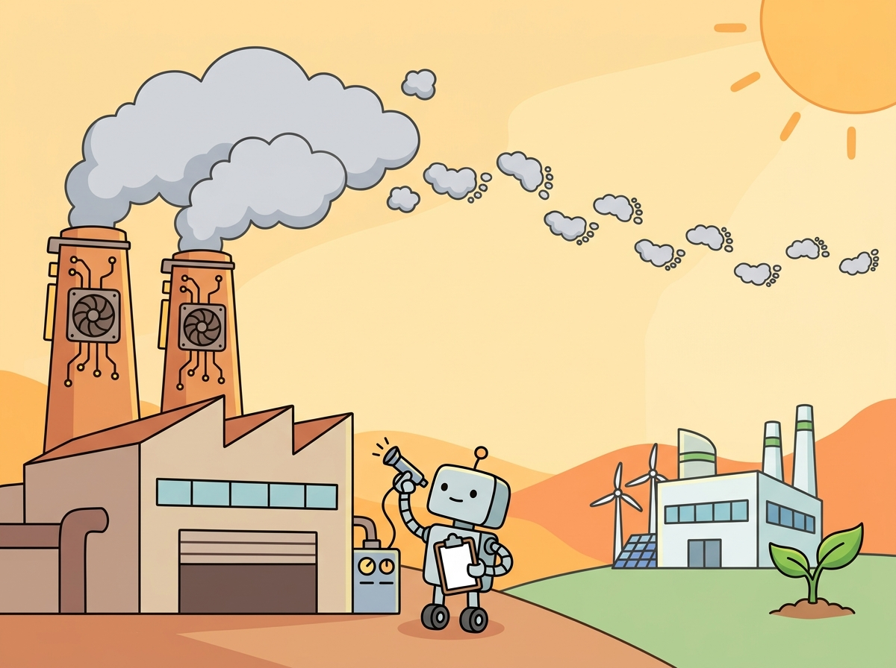

"The carbon footprint of training a single large model can exceed the lifetime emissions of five automobiles. Scale is not free."
A Conscientious Sage, Carbon-Counting AI Agent
Training large language models consumes enormous amounts of energy, and inference at scale multiplies that footprint by orders of magnitude. The landmark Strubell et al. (2019) paper estimated that training a single Transformer model with neural architecture search produced roughly 284 tonnes of CO2, comparable to the lifetime emissions of five cars. Since then, models have grown by three orders of magnitude in parameter count. This section quantifies the environmental cost of LLM development, introduces metrics for tracking carbon emissions at the experiment level, and presents actionable strategies for reducing your environmental footprint without sacrificing model quality. The EU AI Act now requires environmental impact disclosures for general-purpose AI models, making carbon accounting a compliance obligation as well as an ethical one.
Prerequisites
This section builds on the pretraining and scaling laws from Section 6.1, the bias and fairness considerations from Section 30.3, and the EU AI Act compliance requirements from Section 30.9. Familiarity with GPU hardware and distributed training concepts from Chapter 17 provides helpful context for understanding energy consumption at scale.

30.10.1 The Carbon Footprint of LLM Training
Every floating-point operation performed during training consumes energy. The total energy consumption of a training run depends on three factors: the number of FLOPs required, the power draw of the hardware performing those FLOPs, and the overhead of the data center infrastructure (cooling, networking, storage). This overhead is captured by the Power Usage Effectiveness (PUE) metric, defined as the ratio of total facility energy to IT equipment energy. A PUE of 1.0 would mean zero overhead; hyperscale data centers typically achieve PUE values between 1.1 and 1.3, while older facilities may exceed 1.5.
The carbon intensity of the electricity grid where training occurs is the final multiplier. Training in Quebec (hydroelectric, ~20 gCO2/kWh) produces roughly one-twentieth the emissions of training in West Virginia (coal-heavy, ~900 gCO2/kWh). This single decision, choosing where to train, can dominate all other optimization efforts combined.
Training GPT-4 consumed an estimated 50 GWh of electricity, enough to power roughly 4,600 U.S. households for an entire year. Yet the inference cost dwarfs training: serving the model to millions of daily users burns through the equivalent of the training energy budget every few weeks. In the economics of LLM carbon footprints, training is the down payment; inference is the mortgage.
# Estimating training carbon footprint from first principles
import dataclasses
@dataclasses.dataclass
class TrainingCarbonEstimate:
"""Estimate CO2 emissions for an LLM training run."""
total_flops: float # Total FLOPs for the training run
gpu_peak_tflops: float # Peak TFLOPS of a single GPU
gpu_utilization: float # Typical MFU (model FLOPs utilization)
gpu_power_watts: float # TDP of a single GPU
num_gpus: int # Number of GPUs used
pue: float # Power Usage Effectiveness of the data center
carbon_intensity: float # gCO2/kWh of the electricity grid
def compute(self) -> dict:
# Effective TFLOPS per GPU
effective_tflops = self.gpu_peak_tflops * self.gpu_utilization
# Total GPU-hours needed
total_gpu_hours = (
self.total_flops / (effective_tflops * 1e12 * 3600)
)
# Wall-clock hours (parallelized across GPUs)
wall_hours = total_gpu_hours / self.num_gpus
# Energy consumption
gpu_energy_kwh = (
self.gpu_power_watts * self.num_gpus * wall_hours / 1000
)
total_energy_kwh = gpu_energy_kwh * self.pue
# Carbon emissions
co2_kg = total_energy_kwh * self.carbon_intensity / 1000
co2_tonnes = co2_kg / 1000
return {
"total_gpu_hours": total_gpu_hours,
"wall_clock_hours": wall_hours,
"gpu_energy_kwh": gpu_energy_kwh,
"total_energy_kwh": total_energy_kwh,
"co2_kg": co2_kg,
"co2_tonnes": co2_tonnes,
}
# Example: Estimating a 70B parameter model training run
# Using Chinchilla-optimal ~1.4T tokens, ~6 FLOPs per token per param
estimate = TrainingCarbonEstimate(
total_flops=70e9 * 1.4e12 * 6, # ~5.88e23 FLOPs
gpu_peak_tflops=989, # H100 SXM BF16 peak
gpu_utilization=0.40, # 40% MFU is typical
gpu_power_watts=700, # H100 SXM TDP
num_gpus=2048, # Typical large training cluster
pue=1.1, # Hyperscale data center
carbon_intensity=400, # gCO2/kWh, US average grid
)
result = estimate.compute()
for key, value in result.items():
print(f"{key}: {value:,.1f}")
The same result in 4 lines with CodeCarbon, which measures actual power draw instead of estimating:
# pip install codecarbon
from codecarbon import EmissionsTracker
tracker = EmissionsTracker(project_name="llm-training")
tracker.start()
# ... your training code here ...
emissions_kg = tracker.stop()
print(f"CO2: {emissions_kg:.4f} kg, Energy: {tracker.final_emissions_data.energy_consumed:.4f} kWh")# Computing and comparing efficiency metrics across models
models = [
{
"name": "Llama 2 7B",
"params": 7e9, "tokens": 2e12,
"num_gpus": 256, "training_hours": 480,
"gpu_tdp_w": 400, "pue": 1.1, "grid_co2_g_kwh": 400,
},
{
"name": "Llama 2 70B",
"params": 70e9, "tokens": 2e12,
"num_gpus": 2048, "training_hours": 1720,
"gpu_tdp_w": 400, "pue": 1.1, "grid_co2_g_kwh": 400,
},
]
for model in models:
gpu_energy_kwh = (
model["gpu_tdp_w"] * model["num_gpus"]
* model["training_hours"] / 1000
)
total_energy_kwh = gpu_energy_kwh * model["pue"]
co2_tonnes = total_energy_kwh * model["grid_co2_g_kwh"] / 1e6
flops_per_token = 6 * model["params"]
energy_per_param_wh = (total_energy_kwh * 1000) / model["params"]
tokens_per_kwh = model["tokens"] / total_energy_kwh
print(f"\n=== {model['name']} ===")
print(f"Total energy: {total_energy_kwh:,.0f} kWh")
print(f"CO2 emissions: {co2_tonnes:,.1f} tonnes")
print(f"FLOPs/token: {flops_per_token:.2e}")
print(f"Energy/param: {energy_per_param_wh:.4f} Wh")
print(f"Tokens/kWh: {tokens_per_kwh:,.0f}")Inference dominates training in cumulative emissions. A model trained once for \$10 million may serve billions of inference requests over its lifetime. Patterson et al. (2022) found that for widely deployed models, inference energy can exceed training energy by 10x or more within the first year of deployment. Optimizing inference efficiency (through quantization, distillation, speculative decoding, and caching) therefore has a larger cumulative impact than optimizing training efficiency. The serving optimizations from Section 29.1 are as much about environmental responsibility as they are about cost reduction.
30.10.2 Training Efficiency Metrics
Comparing the environmental cost of different models requires standardized metrics. Raw energy consumption is not directly comparable between a 7B model trained on 2T tokens and a 70B model trained on 1.4T tokens. The following metrics normalize for model size and training duration, enabling meaningful comparisons.
| Metric | Formula | What It Captures | Typical Range |
|---|---|---|---|
| FLOPs per Token | $\approx 6 \times N$ (forward + backward) | Computational cost per training step | 4.2e10 (7B) to 4.2e11 (70B) |
| Energy per Parameter | $\frac{E_\text{total}}{N}$ | Amortized energy cost of each weight | 0.01 to 0.1 Wh/param |
| CO2 per Experiment | $E_\text{total} \times \text{PUE} \times C_\text{grid}$ | Total carbon for one complete run | 1 to 500+ tonnes |
| Model FLOPs Utilization (MFU) | Actual FLOP/s / Peak FLOP/s | Hardware efficiency; higher is greener | 30% to 55% |
| Tokens per kWh | Total tokens / $E_\text{total}$ | Training data throughput per unit energy | Varies by hardware generation |
The Chinchilla scaling laws (Hoffmann et al., 2022) have an important environmental implication: compute-optimal training allocates the training budget equally between model size and data volume. Many early large models were undertrained relative to the Chinchilla optimum, meaning they consumed more energy than necessary to achieve a given performance level. Following compute-optimal scaling is both a performance strategy and a green AI strategy.
30.10.3 Strategies for Reducing Environmental Footprint
30.10.3.1 Efficient Architectures
Sparse models, particularly Mixture of Experts (MoE) architectures, activate only a fraction of their total parameters for each input token. A model like Mixtral 8x7B has 47B total parameters but activates only ~13B per token, achieving performance competitive with dense 70B models at a fraction of the inference cost. This sparsity translates directly to energy savings during both training and inference. The architecture deep dive in Chapter 08 covers MoE design in detail.
# Comparing dense vs. MoE energy efficiency
def compare_architectures(
dense_params: float,
moe_total_params: float,
moe_active_params: float,
tokens: float,
flops_per_param_token: float = 6.0,
hardware_tflops: float = 989.0,
mfu: float = 0.40,
gpu_power_w: float = 700,
pue: float = 1.1,
co2_g_kwh: float = 400,
):
"""Compare energy use of dense vs MoE models."""
results = {}
for name, active in [("Dense", dense_params), ("MoE", moe_active_params)]:
total_flops = active * tokens * flops_per_param_token
effective_tflops = hardware_tflops * mfu * 1e12
gpu_seconds = total_flops / effective_tflops
gpu_hours = gpu_seconds / 3600
energy_kwh = gpu_power_w * gpu_hours / 1000 * pue
co2_kg = energy_kwh * co2_g_kwh / 1000
results[name] = {
"active_params": f"{active/1e9:.0f}B",
"energy_kwh": f"{energy_kwh:,.0f}",
"co2_kg": f"{co2_kg:,.0f}",
}
dense_e = float(results["Dense"]["energy_kwh"].replace(",", ""))
moe_e = float(results["MoE"]["energy_kwh"].replace(",", ""))
savings = (1 - moe_e / dense_e) * 100
results["energy_savings"] = f"{savings:.1f}%"
return results
result = compare_architectures(
dense_params=70e9, moe_total_params=47e9,
moe_active_params=13e9, tokens=2e12,
)
for key, value in result.items():
print(f"{key}: {value}")30.10.3.2 Hardware-Aware Training Decisions
Choosing the data center location based on carbon intensity is one of the highest-leverage decisions you can make. Cloud providers now expose carbon intensity data for their regions. Google Cloud's Carbon Footprint dashboard, AWS's Customer Carbon Footprint Tool, and Azure's Sustainability Calculator all provide per-region emission factors. Scheduling training runs during periods of low carbon intensity (at night in regions with significant solar capacity, or during windy periods in regions with wind farms) can further reduce emissions through a practice called carbon-aware computing.
# Carbon-aware region selection for training jobs
import dataclasses
from typing import Optional
@dataclasses.dataclass
class CloudRegion:
name: str
provider: str
co2_g_kwh: float
gpu_cost_per_hour: float
renewable_pct: float
REGIONS = [
CloudRegion("us-east-1", "AWS", 380, 3.06, 0.30),
CloudRegion("us-west-2", "AWS", 120, 3.06, 0.72),
CloudRegion("eu-north-1", "AWS", 25, 3.40, 0.95),
CloudRegion("ca-central-1", "AWS", 30, 3.06, 0.82),
CloudRegion("ap-south-1", "AWS", 700, 2.74, 0.18),
CloudRegion("europe-north1", "GCP", 30, 3.22, 0.92),
CloudRegion("us-central1", "GCP", 450, 3.22, 0.35),
CloudRegion("swedencentral", "Azure", 20, 3.40, 0.95),
]
def recommend_region(
gpu_hours: float,
max_cost: Optional[float] = None,
) -> list[dict]:
"""Rank regions by carbon efficiency within budget."""
candidates = []
for r in REGIONS:
cost = r.gpu_cost_per_hour * gpu_hours
energy_kwh = 700 * gpu_hours / 1000 * 1.1
co2_kg = energy_kwh * r.co2_g_kwh / 1000
if max_cost and cost > max_cost:
continue
candidates.append({
"region": f"{r.provider}/{r.name}",
"co2_kg": round(co2_kg, 1),
"cost_usd": round(cost, 0),
"renewable": f"{r.renewable_pct:.0%}",
})
return sorted(candidates, key=lambda x: x["co2_kg"])
for r in recommend_region(10_000, max_cost=50_000)[:5]:
print(f"{r['region']:25s} CO2: {r['co2_kg']:7.1f} kg"
f" Cost: ${r['cost_usd']:,.0f} Renewable: {r['renewable']}")
30.10.3.3 Distillation and Quantization as Green Alternatives
Rather than training a new large model from scratch, knowledge distillation transfers capabilities from a large "teacher" model to a smaller "student" model. The student trains on the teacher's output distribution rather than raw data, requiring significantly less compute. A distilled 7B student trained to approximate a 70B teacher's behavior typically requires 10 to 100x less compute than training the 70B model originally. The efficient adaptation techniques in Chapter 16 (LoRA, QLoRA) amplify these savings further by fine-tuning only a small fraction of parameters.
Post-training quantization reduces inference energy by representing weights and activations in lower precision (INT8, INT4, or even lower). A model quantized to 4-bit precision uses roughly one-quarter the memory bandwidth and a corresponding fraction of energy per inference request. When deployed at scale across millions of daily requests, the cumulative savings are substantial.
30.10.3.4 Reusing Pre-Trained Models vs. Training from Scratch
The greenest training run is the one you do not perform. Using a pre-trained foundation model and adapting it through fine-tuning, LoRA, or prompt engineering avoids the enormous upfront carbon cost of pretraining. A full LoRA fine-tuning run on a 7B model typically requires 1 to 10 GPU-hours, compared to 100,000+ GPU-hours for pretraining. The decision tree is simple: if an existing model can achieve your target quality with adaptation, do not train from scratch.
Who: An ML engineering lead at a climate technology startup building a domain-specific language model
Situation: The startup needed a 13B parameter model specialized in climate science terminology. The founding team initially proposed training from scratch on a curated 1T-token corpus of scientific literature to maximize domain accuracy.
Problem: A back-of-envelope estimate revealed that pretraining would require approximately 200,000 A100 GPU-hours and produce roughly 30 tonnes of CO2 at US average grid intensity. For a company whose mission centered on climate impact, this was difficult to justify.
Decision: They chose to fine-tune an existing open-weight 13B model with LoRA (rank 16) on a curated 50K-example domain dataset instead. Full fine-tuning was also evaluated as a middle option at approximately 200 GPU-hours.
Result: LoRA fine-tuning required only 8 A100 GPU-hours and produced approximately 0.001 tonnes of CO2, a 30,000:1 reduction compared to pretraining. Domain accuracy on their benchmark reached 91% of what the team estimated pretraining would achieve.
Lesson: Building on top of existing pretrained models whenever possible yields carbon savings of three to four orders of magnitude with minimal quality loss for most domain-specific applications.
30.10.4 Carbon Tracking Tools
Carbon accounting for ML experiments requires instrumenting your training pipeline to measure energy consumption in real time. Several open-source tools make this straightforward.
30.10.4.1 CodeCarbon
CodeCarbon is the most widely adopted carbon tracking library for Python ML workflows. It monitors CPU and GPU power draw using hardware-level interfaces (RAPL for Intel CPUs, nvidia-smi for NVIDIA GPUs), combines this with the carbon intensity of your electricity grid (looked up by IP geolocation or manual configuration), and produces a CSV log of emissions per experiment.
# Tracking training emissions with CodeCarbon
from codecarbon import EmissionsTracker
from transformers import (
AutoModelForCausalLM, AutoTokenizer,
TrainingArguments, Trainer,
)
from datasets import load_dataset
tracker = EmissionsTracker(
project_name="green-ai-finetune",
output_dir="./carbon_logs",
log_level="warning",
measure_power_secs=30,
tracking_mode="process",
)
tracker.start()
model_name = "meta-llama/Llama-2-7b-hf"
tokenizer = AutoTokenizer.from_pretrained(model_name)
model = AutoModelForCausalLM.from_pretrained(model_name)
dataset = load_dataset("tatsu-lab/alpaca", split="train[:1000]")
training_args = TrainingArguments(
output_dir="./output",
num_train_epochs=1,
per_device_train_batch_size=4,
gradient_accumulation_steps=4,
fp16=True,
logging_steps=50,
)
trainer = Trainer(model=model, args=training_args, train_dataset=dataset)
trainer.train()
emissions = tracker.stop()
print(f"\nTotal emissions: {emissions:.6f} kg CO2")
print(f"Equivalent to {emissions / 0.21:.2f} km driven")
print(f"Energy consumed: {tracker.final_emissions_data.energy_consumed:.4f} kWh")30.10.4.2 ML CO2 Impact Calculator
For quick estimates without instrumenting your code, the ML CO2 Impact online calculator (mlco2.github.io/impact) accepts your hardware type, training duration, and cloud provider/region, then returns estimated emissions. This is useful for planning and for retrospectively estimating the footprint of experiments where you did not run a tracker.
30.10.4.3 Experiment-Level Carbon Accounting
Integrating carbon tracking into your experiment management system (Weights and Biases, MLflow, or Neptune) allows you to compare the carbon cost of different approaches alongside their performance metrics. This enables Pareto-optimal decisions: choosing the model or hyperparameter configuration that achieves the best quality per unit of carbon emitted.
# Logging carbon metrics alongside training metrics in W&B
import wandb
from codecarbon import EmissionsTracker
def carbon_aware_training_loop(config: dict):
"""Training loop with integrated carbon tracking."""
wandb.init(project="green-ai", config=config)
tracker = EmissionsTracker(
project_name=wandb.run.name, log_level="error",
)
tracker.start()
for epoch in range(config["epochs"]):
train_loss = train_one_epoch()
val_loss = evaluate()
current = tracker._prepare_emissions_data()
wandb.log({
"train/loss": train_loss,
"val/loss": val_loss,
"carbon/co2_kg": current.emissions,
"carbon/energy_kwh": current.energy_consumed,
"carbon/loss_per_co2": (
val_loss / max(current.emissions, 1e-9)
),
})
emissions = tracker.stop()
wandb.summary["total_co2_kg"] = emissions
wandb.finish()30.10.5 The Rebound Effect
In economics, the Jevons paradox (also called the rebound effect) observes that improvements in energy efficiency often lead to increased total energy consumption because the reduced cost per unit encourages greater usage. This pattern is playing out in the AI industry. Each generation of hardware is more energy-efficient per FLOP, yet total AI energy consumption continues to grow because the efficiency gains are reinvested into training larger models, running more experiments, and serving more inference requests.
Between 2020 and 2025, GPU energy efficiency (measured in FLOP/s per watt) improved by roughly 3x from A100 to H100/H200. During the same period, the total compute used in the largest training runs grew by approximately 10x. The net result is that total energy consumption for frontier model training increased despite hardware efficiency improvements. This pattern suggests that efficiency alone will not solve the environmental challenge; it must be combined with deliberate choices about how much compute to use.
Efficiency without restraint is not sustainability. If every 2x improvement in hardware efficiency is met with a 4x increase in model size, total energy consumption doubles with each generation. The Green AI movement (Schwartz et al., 2020) argues that the research community should treat compute efficiency as a first-class evaluation metric alongside accuracy. Reporting the FLOPs, energy, and carbon cost of experiments, not just their accuracy, creates incentives for developing methods that achieve strong results with less compute. Some conferences (notably NeurIPS and EMNLP) now encourage or require compute and carbon reporting in paper submissions.
30.10.6 Energy and Carbon Profiling at the Experiment Level
Moving beyond aggregate estimates, modern tooling enables per-experiment and per-inference carbon profiling. CodeCarbon (covered in Section 4.1) provides the instrumentation layer, but two additional resources help contextualize your measurements: the ML.ENERGY Leaderboard, which ranks popular LLMs by energy consumption per output token across standardized benchmarks, and the MELODI benchmark, which evaluates models on a joint accuracy-per-joule metric. Together these tools let teams make informed model selection decisions that balance quality against environmental cost.
30.10.6.1 Tokens-per-Joule as an Efficiency Metric
While tokens-per-kWh is useful for training, inference efficiency is better captured at finer granularity. Tokens per joule (T/J) measures how many output tokens a serving system produces per joule of energy consumed. This metric normalizes across hardware, batch sizes, and request patterns, making it possible to compare a quantized 7B model on consumer GPUs against a dense 70B model on H100 clusters. Higher T/J is better.
| Model | Parameters | Quantization | Energy per 1K tokens | CO2 per 1K tokens (US avg grid) | Tokens/Joule |
|---|---|---|---|---|---|
| Llama 3 8B | 8B | INT4 (GPTQ) | ~0.4 Wh | ~0.16 g | ~700 |
| Llama 3 8B | 8B | FP16 | ~1.0 Wh | ~0.40 g | ~280 |
| Llama 3 70B | 70B | INT4 (AWQ) | ~3.2 Wh | ~1.28 g | ~87 |
| Llama 3 70B | 70B | FP16 | ~8.0 Wh | ~3.20 g | ~35 |
| Mixtral 8x7B (MoE) | 47B (13B active) | FP16 | ~1.8 Wh | ~0.72 g | ~155 |
| GPT-4o (API) | Undisclosed | Provider-managed | ~5.0 Wh (est.) | ~2.00 g (est.) | ~56 (est.) |
Note that these figures are approximate and vary with hardware, batch size, sequence length, and serving framework. The key takeaway is the magnitude of difference: INT4 quantization roughly doubles tokens-per-joule, and smaller models can be 10 to 20x more energy-efficient per token than their larger counterparts.
30.10.6.2 Green Inference Strategies
Five strategies reduce inference energy consumption without retraining:
- Model distillation. A 7B student distilled from a 70B teacher delivers 80 to 90% of the teacher's quality at one-tenth the energy per request. See Section 16.5.
- Post-training quantization. INT4/INT8 quantization (via GPTQ, AWQ, or bitsandbytes) cuts memory bandwidth and energy by 2 to 4x with minimal quality degradation. See Section 9.2.
- Batch scheduling. Accumulating requests into larger batches improves GPU utilization. Continuous batching (vLLM, TGI) keeps the GPU occupied rather than idle between requests.
- Semantic caching. Caching responses to frequently asked or semantically similar queries eliminates redundant computation entirely. See Section 29.1.
- Region-aware routing. Route inference requests to data center regions with the lowest real-time carbon intensity. Cloud providers expose carbon-intensity APIs that enable dynamic routing decisions.
The efficiency paradox (Jevons paradox) in AI. Every green inference strategy listed above reduces the cost per token. Historically, lower per-unit costs lead to dramatically higher total usage, often overwhelming the efficiency gains. If quantizing your model cuts cost by 4x, and your product team responds by serving 10x more requests (longer conversations, more features, broader rollout), total energy consumption increases 2.5x despite the per-token improvement. Sustainable AI requires pairing technical efficiency with organizational discipline: setting energy budgets, tracking total consumption (not just per-token efficiency), and making conscious decisions about how efficiency gains are reinvested.
30.10.7 Policy Perspectives and Regulatory Requirements
The EU AI Act (covered in detail in Section 30.9) includes environmental disclosure requirements for providers of general-purpose AI (GPAI) models. Article 53 requires GPAI providers to document the energy consumption of model training, and for models classified as having systemic risk, to report the energy consumption of inference as well. The European AI Office has indicated that standardized carbon reporting templates will be published as part of the implementing regulations.
Beyond the EU, several other jurisdictions are developing AI environmental disclosure requirements. The US Executive Order on AI (October 2023) called for research into AI's environmental impact. The UK's AI Safety Institute has included energy consumption in its model evaluation framework. China's interim measures for generative AI require providers to "adopt measures to prevent environmental damage." For organizations operating globally, implementing carbon tracking now prepares you for regulatory requirements that are converging across jurisdictions.
Who: A sustainability officer and an MLOps engineer at a European AI company providing GPAI models to enterprise clients
Situation: The EU AI Act's GPAI provisions required the company to include energy consumption and carbon emission estimates in their model technical documentation. They had no existing carbon tracking infrastructure.
Problem: Training runs spanned multiple GPU clusters across two cloud regions, and inference serving added a separate, ongoing emissions stream. The sustainability officer had no way to produce the per-model-version emission figures that the technical documentation required.
Decision: They built an automated five-stage pipeline: (1) instrument all training runs with CodeCarbon, (2) log per-experiment emissions to a central experiment tracker, (3) aggregate emissions by model version for the GPAI technical documentation, (4) sample inference power draw across representative request distributions and extrapolate to total serving volume, and (5) report both Scope 2 (purchased electricity) and Scope 3 (hardware manufacturing, data center construction) emissions. The pipeline was integrated into the CI/CD workflow discussed in Section 28.3.
Result: Carbon reports were generated automatically for each model release. The first complete report took 3 weeks of engineering to build; subsequent reports required zero manual effort. The company used the data to shift 60% of training jobs to a Nordic data center, reducing per-model emissions by 14x.
Lesson: Automating carbon reporting into the CI/CD pipeline turns a regulatory obligation into actionable data that drives real emission reductions.
30.10.8 Practical Checklist for Green AI
- Reuse before retraining. Check if an existing pre-trained model meets your needs. Use prompt engineering, LoRA, or QLoRA before considering full fine-tuning.
- Choose a green region. Select data center locations with low carbon intensity grids. Prefer regions with high renewable energy percentages.
- Use efficient architectures. Prefer MoE, sparse attention, or smaller models where quality requirements allow.
- Quantize for inference. Deploy models in INT4 or INT8 precision. The quality loss is often negligible; the energy savings are significant.
- Track emissions. Instrument every training run with CodeCarbon. Log emissions alongside accuracy metrics.
- Report FLOPs. Include compute cost in experiment reports. Enable Pareto-optimal model selection.
- Avoid unnecessary experiments. Use learning rate finders, small-scale ablations, and early stopping to reduce wasted compute.
- Optimize MFU. Higher model FLOPs utilization means less idle power draw. Profile and optimize data loading and communication overhead.
- Cache inference results. Semantic caching (described in Section 29.1) eliminates redundant computation.
- Prepare for regulation. Build carbon reporting into your model documentation pipeline for EU AI Act compliance.
Readers often focus exclusively on training costs and overlook inference costs. While training a large model is energy-intensive, inference at scale (millions of requests per day) can cumulatively exceed training costs over the model's lifetime. A model trained once but served for a year may consume 10x more energy in inference than in training. Always include inference projections in environmental impact assessments.
- Training a single large LLM can emit hundreds of tons of CO2, comparable to the lifetime emissions of several automobiles.
- Training efficiency metrics (FLOP per token, tokens per kWh, performance per dollar) enable fair comparison of environmental impact across models and training runs.
- Key reduction strategies include using efficient architectures, training on cleaner energy grids, knowledge distillation, and choosing smaller models when they suffice.
- Carbon tracking tools (CodeCarbon, ML CO2 Impact) estimate emissions from compute usage, enabling teams to report and reduce their environmental footprint.
- The rebound effect means that efficiency gains can increase total consumption by making LLM usage cheaper and more widespread.
Exercises
Exercise 29.11.1: Carbon Footprint Estimation
Using the TrainingCarbonEstimate class from Section 1, estimate the carbon footprint for training a 13B parameter model on 1T tokens using (a) H100 GPUs in a US average grid, (b) A100 GPUs in the same grid, and (c) H100 GPUs in a Nordic data center (25 gCO2/kWh). Compare the results and identify which single factor has the largest impact on emissions.
Answer Sketch
Location dominates: moving from US average (400 gCO2/kWh) to Nordic (25 gCO2/kWh) yields a 16x reduction in emissions. Hardware generation (A100 to H100) provides roughly a 2 to 3x improvement. Both factors are multiplicative, so the greenest option combines newest hardware with cleanest grid.
Exercise 29.11.2: Carbon-Aware Experiment Management
Integrate CodeCarbon into a Hugging Face Trainer loop for fine-tuning GPT-2. Log emissions to W&B or MLflow. Run three experiments with different hyperparameters. Create a scatter plot of validation loss vs. CO2 emissions and identify the Pareto-optimal configuration.
Answer Sketch
Larger batch sizes improve MFU and reduce total training time, often producing lower emissions for the same number of epochs. The Pareto frontier typically shows a knee where further quality improvement requires disproportionately more compute.
Exercises
The carbon footprint of an LLM has three lifecycle phases. (a) Name them and rank them by typical CO2 contribution for a frontier model deployed at scale. (b) Why is the answer different for a research lab versus a major API provider? (c) What is the single number most commonly missing from public carbon disclosures, and what does it understate?
Answer Sketch
(a) Phases: pretraining, fine-tuning/post-training, and inference. For a deployed product at scale, inference dominates lifetime emissions because billions of inference calls compound, while pretraining is paid once. (b) For a research lab without a large user base, pretraining can dominate (one big training run, few inferences); for an API provider, inference is 90%+. (c) Embodied carbon of the GPUs themselves (manufacturing, transport, datacenter buildout) is rarely reported. It can add 20-40% to lifetime operational emissions and is invisible in PUE-only reporting.
A 70B model is trained on 15T tokens with the Chinchilla compute formula $C \approx 6ND$. Assume 40% MFU on H100s (~2 PFLOP/s peak fp16 at 700W). (a) Estimate total GPU-hours. (b) Estimate energy in MWh. (c) Convert to tCO2 assuming the US grid average of 0.4 kg CO2/kWh.
Answer Sketch
(a) FLOPs = 6 x 70e9 x 15e12 = 6.3e24. At 40% MFU on 2 PFLOP/s = 0.8 PFLOP/s effective per GPU. GPU-seconds = 6.3e24 / 0.8e15 = 7.9e9. GPU-hours = ~2.2 million. (b) Energy = 2.2e6 hours x 0.7 kW x PUE 1.2 = ~1.85 GWh = 1850 MWh. (c) 1850 MWh x 0.4 t/MWh = 740 tCO2. Comparison: an average US car emits ~5 tCO2/year, so this single training run equates to ~150 car-years. Scaling and inference operate at 100-1000x this annually for frontier providers.
Sketch a 6-line integration of codecarbon into a PyTorch training script that logs emissions per epoch and uploads the report at the end. State one limitation of codecarbon's estimates.
Answer Sketch
from codecarbon import EmissionsTracker
tracker = EmissionsTracker(project_name="llm_run", save_to_file=True)
tracker.start()
for epoch in range(N): train_one_epoch(); tracker.flush() # logs per-epoch delta
emissions = tracker.stop() # kg CO2eq
upload_report("emissions.csv")
Limitation: codecarbon reads GPU power via NVML and multiplies by a regional emissions factor; it doesn't capture cooling losses (PUE), embodied carbon, or grid-mix variation by hour. For audit-grade reporting, supplement with datacenter-level reports and a time-of-use grid-intensity API like Electricity Maps.
Inference-per-token energy has fallen by ~10x in three years through quantization, KV-cache optimization, and better batching. Total LLM-related electricity consumption has roughly tripled in the same period. Explain (a) why these two facts are consistent, (b) what economic phenomenon they illustrate, and (c) what intervention would actually reduce total emissions.
Answer Sketch
(a) Per-token energy fell, but cheaper tokens unlocked vastly more use cases (every PR review, every chat reply, every search), so total token volume grew faster than per-token cost fell. Total = volume x intensity, and volume won. (b) This is the Jevons paradox or rebound effect: efficiency gains in a desirable resource often increase total consumption rather than reducing it. (c) Pure efficiency improvement does not bound emissions. Effective interventions are demand-side or grid-side: carbon-aware compute scheduling (run training when grids are clean), pricing that includes carbon externality, and direct procurement of additional clean power capacity at the datacenter. Voluntary reduction by individual users does not scale.
Carbon-aware scheduling is an emerging paradigm where training jobs are automatically routed to data centers with the lowest real-time carbon intensity, shifting compute across regions and time zones.
Early results from Google and Microsoft show 20 to 30% emission reductions with minimal latency impact.
Meanwhile, neuromorphic and optical computing architectures promise orders-of-magnitude improvements in energy efficiency for inference workloads, though they remain years from production readiness for LLM-scale models.
What Comes Next
The next section, Section 30.11: Privacy Attacks and Differential Privacy for LLMs, examines the privacy risks inherent in large language models and presents differential privacy as a technical defense.
Strubell, E., Ganesh, A., and McCallum, A. (2019). "Energy and Policy Considerations for Deep Learning in NLP." Proceedings of ACL 2019.
Landmark study quantifying the carbon emissions of training large NLP models, finding that training a single Transformer can emit as much CO2 as five cars over their lifetimes. Catalyzed the green AI movement and remains a key reference for environmental impact discussions.
Patterson, D. et al. (2021). "Carbon Emissions and Large Neural Network Training." arXiv:2104.10350.
Comprehensive measurement of carbon emissions from training large neural networks at Google, with practical recommendations for reducing environmental impact. Provides the empirical basis for many of this section's quantitative claims.
Schwartz, R. et al. (2020). "Green AI." Communications of the ACM, 63(12), 54-63.
Proposes the concept of Green AI, arguing that the field should prioritize computational efficiency alongside accuracy. Introduces reporting standards for compute costs that have influenced conference submission requirements.
Hoffmann, J. et al. (2022). "Training Compute-Optimal Large Language Models." arXiv:2203.15556 (Chinchilla).
The Chinchilla paper demonstrates that most large models are over-parameterized relative to their training data, showing that compute-optimal training can achieve better performance with less energy by balancing model size and data volume.
Lannelongue, L., Grealey, J., and Inouye, M. (2021). "Green Algorithms: Quantifying the Carbon Footprint of Computation." Advanced Science, 8(12).
Introduces an online calculator for estimating the carbon footprint of computational workloads. A practical tool for researchers and teams wanting to quantify and report the environmental impact of their AI experiments.
CodeCarbon. "Track and Reduce CO2 Emissions from Compute." GitHub: mlco2/codecarbon.
Open-source Python library that automatically tracks energy consumption and carbon emissions during model training and inference. Drop-in integration for PyTorch and TensorFlow workflows, enabling transparent emissions reporting.
Lacoste, A. et al. (2019). "Quantifying the Carbon Emissions of Machine Learning." arXiv:1910.09700.
Proposes a standardized methodology for estimating ML carbon emissions based on hardware, runtime, and energy grid carbon intensity. The methodology underpins several carbon tracking tools referenced in this section.
European Parliament. (2024). "Regulation (EU) 2024/1689: Artificial Intelligence Act." Article 53.
Article 53 of the EU AI Act requires providers of general-purpose AI models to report estimated energy consumption during training. A concrete example of how environmental reporting is becoming a regulatory obligation.